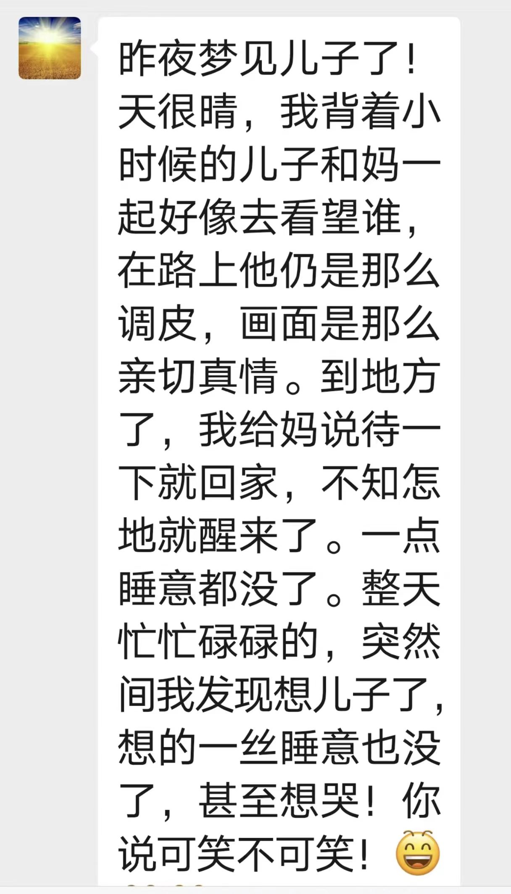

## 父亲写的与子书
儿时父问偏爱处，低语轻藏一段真。
当日随言风过耳，而今方觉是长春。

2026年5月12日
时间：2026年5月12日
与子书：90%人走偏，不是智商差、不是家境穷，是4个核心成长底线，没管住、没守牢。一是管住“懒散”，是毁掉人的“慢性毒药”，养出刻进骨子里的自律，成长第一步。彻底根治懒散，规矩一：今日事今日毕，绝不拖延；规矩二：早睡早起，作息绝不乱；规矩三：做事有计划，不盲目瞎忙。二是管住“欲望”，放纵欲望，是一个人成才的“最大陷阱”；学会延迟满足，才能扛住诱惑。三是管住“脾气”，坏脾气，是人人生的“最大绊脚石”，修炼好性格，决定人一生上限。四是管住“规矩”，无规矩，不成才，没底线，必毁人；守住底线规矩，人才能走正道。
2026年5月8日
时间：2026年5月8日
与子书：人这一生，说话最见人品与格局。脾气人人都有，克制才是本事。言语温柔，不是软弱，而是通透。别用恶语伤人，人情薄如一张纸。生活大半烦恼，都源于口无遮拦。少抱怨少指责，懂得换位思考。管住嘴，稳住心，日子才会顺遂。好好待人，好好言语，善待身边人。不争口舌输赢，方能少结人间恩怨。心宽言缓，处事有度，便是大智慧。嘴下留德，心存善念，万事皆会圆满。
2026年5月7日
时间：2026年5月7日
与子书：人的福报不是求来的，而是修来的。福从哪里修呢？
第一条：从善良里修，善良是立身的根本，根基扎得正，福报的枝叶才会自然舒展，一个人如果失了善良的底色，再怎么向外追逐得到的都是沙上建塔终究成空。
第二条：从知足里修，古人说；良田万顷不过一日三餐，广厦万间只睡卧榻三尺，真正的富足从不在外在的堆砌，而在内心的充盈。知足者能在寻常烟火中品出甘甜，而贪心者，却在无尽欲求里备受煎熬，这便是福与苦的分水岭。
第三条：从感恩里修，心怀感恩的人自会吸引世间的美好向自己汇聚，福报便会在这份真诚的感念中悄然生长。
第四条：从包容里修，人心就像容器，狭隘者容不下半点的纷忧，终被琐事困局，格局越大承载的福气便会越厚重，海纳百川有容乃大，心宽一寸，路宽一仗，福厚一分。
福运从不在别人的评价里，而藏在自己的方寸心间，心若向阳自带光芒，万事皆顺，心若放宽前路坦荡福气绵长。修好本心在自己的世界里熠熠生辉。
2026年4月27日
时间：2026年4月27日 09:38
与子书：自信的本质就是大量的练习，大量的研究，不断的重复，不断的坚持，古人讲：厚积才能薄发，不积跬步无以至千里，所以想要变强，就要一次又一次练习，练到举手投足都自带从容，练到旁人以为你天生如此。记住人生没有白走的路，没有天赋那有重复。
2026年4月10日
时间：2026年4月10日 09:00
与子书：你见过哪个活得开心的人，总是指责别人的；你见过哪个活得通透的人，总是争个对错的；你见过哪个内心富足的人，总是在否定他人的；幸福的人忙着感受生活，因为他的注意力在享受上，而不是在审判上。通透的人不争对错，因为他知道对错是立场不是真理。
2026年3月15日
时间：2026年3月15日 08:00
与子书：世界上最可贵的两个词：一个叫认真；一个叫坚持。认真的人改变了自己，坚持的人改变了命运。很多事不是看到了希望采取坚持，而是坚持了才有希望。
2026年3月5日
时间：2026年3月5日 08:30
与子书：四个字"尖斌卡引"；尖:能大能小，真君子；斌:能文能武，是英才；卡:能上能下，见格局；引:能屈能伸，福自来。
2026年2月23日
时间：2026年2月23日 08:02
世界上最可贵的两个词：一个叫认真；一个叫坚持。认真的人改变了自己，坚持的人改变了命运。很多事不是看到了希望采取坚持，而是坚持了才有希望。
2026年2月10日
时间：2026年2月10日 11:04
与子书：牛仔，人生很长，工作再忙、事儿再大，也别拿身体换前程，人拼到最后，拼的都是身体。千万不要仗着年轻就随便造，熬夜、乱吃、久坐等，看似没事，却都是在透支。健康不是小事，是一切的根基。你平平安安、健健康康，比什么都重要。身体永远是第一位的。没了健康，再拼再忙都没用，照顾好自己，就是对自己、对家里最大的负责。2026年2月25日，教育部召开深入落实"健康第一"工作部署会（2026年"新春第一会"），健康第一成为国民生活的主旋律。
2026年1月20日
时间：2026年1月20日 11:04
与子书：毛主席四句话解决生活中一个人90%以上的焦虑：
- 第一句话越是形势不好，越要有战略定力；不要跟着别人去抱怨；别人抱怨的时候，脑袋已经出了问题。
- 第二句话积极的想办法才会有办法，只有相信没有不能解决的问题才有能力解决一切问题。
- 第三句话不要一听到和自己不同的意见就生气，认为是不尊重自己，这是以平等的心态带人的条件之一。
- 第四句话一个矛盾克服了，又一个矛盾产生了，在任何时间、任何地方任何人身上总是有矛盾存在，没有矛盾就没有世界。
2026年1月1日
时间：2026年1月1日 07:27
与子书：世界上最美的相遇是遇见更好的自己！
一、《心经》——好心态精髓7个字（观音菩萨开悟的心得佛：有智慧的人）：观自在，五蕴（人或肉身）皆空。
- 1.一切都有缘起，不是空穴来风，一切都是最好的安排，学会坦然接受。
- 2.一切都会过去，过去了的便是空空如也，没有永恒不变的，要好好珍惜当下活在当下。
- 3.一切都要向美好处努力，保持一颗空灵阳光的心态最重要。时时观照让自己保持那颗空灵阳光的心，看到希望和光明，便会获得大自在就远离了痛苦，这就是正确的生活方式。
二、《金刚经》——好行为精髓三个字：善护念。（释迦摩尼佛开悟的心得）真正的佛陀是人不是神。干好普通事，做好平凡人，用火热之心做善良之事。
三、《西游记》——好方向精髓九个字（唐三藏开悟的心得）跟对人、做对事、走对路。
2025年12月24日
时间：2025年12月24日 08:05
诚是立身之本，有信仰度，圆通万事。人一生要有美好的愿望，把愿望提升到信仰的高度。
一是工作学习不仅是为获得生活的食粮，工作学习的意义在于其中隐藏着磨砺心志、塑造灵魂、具备沉稳而不摇摆厚重人格魅力的巨大力量，这就是工作学习行为的神圣性，工作学习是人生最尊贵、最重要、最有价值的行为，能使人形成有深度的正确的劳动观和人生观，工作学习就是实现自我、完善人格"精进"最好的修行道场。
二是工作学习中有痛苦和烦恼，有顺境和逆境，但无论怎样，都要抱着积极的心态朝前看，任何时候都要认真工作学习，持续努力，这才是最正确的，也是最重要的，就能扭转你的人生，就能带来不可思议的好运，工作学习现场有神灵。
三是一个人如果不爱工作学习丧失热情，长期持续一种颓废的情绪和无聊的生活，你不但不会成长，而且会丧失自己人性中那些美好的东西，将找不到人生和工作的意义，努力工作学习的背后隐藏着快乐和欢喜。
四是人的烦恼据说有108种之多，其中"欲望、恼怒、愚智"这三者是让人陷于烦恼的最厉害的东西。人是不幸的动物，生活中总是被"三毒"支配。独一无二的方法就是努力工作学习让毒素稀释，这也是人真正的能力。
2025年12月10日
时间：2025年12月10日 08:15
与子书：在外不要逞强，高的还有更高的，马上还有舞刀的，强人面前三尺让，菩萨都是低头相。弱者易怒如虎，强者平静如水，一个人豁达的背后是实力也是格局。
2025年11月20日
时间：2025年11月20日 09:00
与子书：毛主席四句话解决生活中一个人90%以上的焦虑：
- 第一句话越是形势不好，越要有战略定力；不要跟着别人去抱怨；别人抱怨的时候，脑袋已经出了问题。
- 第二句话积极的想办法才会有办法，只有相信没有不能解决的问题才有能力解决一切问题。
- 第三句话不要一听到和自己不同的意见就生气，认为是不尊重自己，这是以平等的心态带人的条件之一。
- 第四句话一个矛盾克服了，又一个矛盾产生了，在任何时间、任何地方任何人身上总是有矛盾存在，没有矛盾就没有世界。
2025年11月10日
时间：2025年11月10日 08:30
与子书：牛仔，人生很长，工作再忙、事儿再大，也别拿身体换前程，人拼到最后，拼的都是身体。千万不要仗着年轻就随便造，熬夜、乱吃、久坐等，看似没事，却都是在透支。健康不是小事，是一切的根基。你平平安安、健健康康，比什么都重要。身体永远是第一位的。没了健康，再拼再忙都没用，照顾好自己，就是对自己、对家里最大的负责。2026年2月25日，教育部召开深入落实"健康第一"工作部署会（2026年"新春第一会"），健康第一成为国民生活的主旋律。
2025年10月15日
时间：2025年10月15日 08:00
与子书：一年之计在于春，一生之计在于勤；春天是播种的季节，更是奋斗的季节。一年春作首，万事行为先。新一年"开好局起好步"要做到三个干：把千头万绪事干顺，把平凡小事干精，把本职工作干优。把简单事情做好就是不简单，把平凡的事情做好就是不平凡。今天我讲两个方面：
一是喜欢一本书：作家梁爽《把自己重养一遍》。
好好爱自己，把日子过成自己喜欢的模样。
你需要的不是被爱，而是好好爱自己，就是送给自己最大的礼物。远离负能量，坚守健康的心态，健身、读书、旅行，学会独处。不内耗，不较劲，不攀援，不依赖。生命啊，不过是一场路过。其实啊，其实呢，也是一场对自己的负责。人活在这个世上，你首先要成为自己，然后才为任何人。
爱自己——
一是养好自己的身体，身体是生命的支柱，也是你幸福生活的源泉。让自己健康的生活才是一个人最大的拥有。台湾作家三毛说：今日的事情，尽心、尽意、尽力去做了，无论成绩如何，都应该高高兴兴的上床睡觉。美好的人生，就是白天脚踏实地，晚上"觉"踏实地。
二是学会管理自己的情绪。心平能愈三千疾，心通可通万事理。心福可染三千愁心和可容万粒尘。成年人的世界里，情绪稳定才是一个人最大的修养。只有内心平静平和，才能感受到生活的幸福和快乐。
三是学会调整自己的心态。好心态是治愈一切的良药，只有让心快乐了，人才会变得阳光。生活中的凡事，多向好的方向努力，不悲观，不抱怨，少想多做，你的人生就会变得越来越顺。
任何时候一定都不要忘了，永远不要放弃成长。永远要有自己的翅膀，你曾经跨越高山去寻找真爱，而真正的爱是走向自己，拥抱自己。好好爱自己，把日子过成自己喜欢的模样，自己就是自己最好的再生父母。
二是爱上一句话：北大首任校长严复说过的这段话："物质的贫穷，能摧毁你一生的尊严；精神的贫穷，能耗尽你几世的轮回。世上没有白走的路，人生没有白读的书，你走过的路，你读过的书，会在不知不觉中改变你的认知，悄悄帮你擦去脸上的无知和肤浅。读书，世界就在眼前，不读书，眼前就是世界。读书不一定能让你前程似锦，功成名就，但至少可以让你出言有尺，嬉闹有度，说话有德，做事有余。这世间，物质贫穷不可怕，最可怕的是精神上的贫穷。真正的穷人，一定穷在他的认知、思维和价值观。没有谁的生活没有烦恼，唯有阅读是最好的解药。书中不一定有黄金屋，但一定会认识更好的自己。
鸟欲高飞先振翅，人求上进先读书。
不负春光起好步，只争朝夕开新局。树的方向风决定，人的方向自己定，生活就是我们为之奋斗的事业！在任何时候，干任何事，都要吃得下苦耐得住烦，一要勤二要实。"勤"字诀多一些努力，便多一些成功的机会。无数事实证明：成功的最短途径是勤奋。不要光耍嘴皮子，不要好逸恶劳，勤字当头，苍天不负有心人，天道酬勤！懒能致笨。"实"字诀。踏踏实实做人，实实在在办事。任何一个双手插在口袋里的人，都爬不上成功的梯子。给人留下一个实在的形象，给自己的成功增添一份夯实的基础，从实际出发，对自己负责。
你想聪明吗？跑步吧！你想健美吗？跑步吧！你想强壮吗？跑步吧！如果你要卓越，读书吧！如果你要高尚，读书吧！如果你要明智，读书吧！